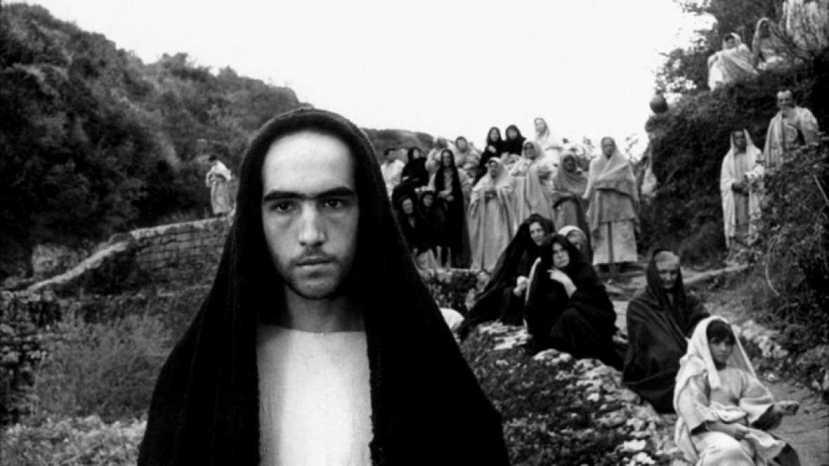

Cine y Sociedad
Tras resolver la “Questione della Lingua” y establecer el florentino literario del siglo XIV como lengua administrativa y literaria, el italiano sustituyó al latín en los estados italianos. No obstante, la lengua era conocida principalmente por una élite intelectual, ya que la mayoría de la población era analfabeta. Fue después de la Segunda Guerra Mundial, con el milagro económico, el aumento del consumo y la llegada de la televisión en los años 50, cuando el italiano se convirtió en la lengua materna de la mayoría de los italianos.
En "Roma città aperta", se evidencian los dialectos regionales, como el Centro Meridionale, en contraste con los dialectos de algunos actores de "Il vangelo secondo Matteo" provenientes del sur de la costa Adriática. Las películas de la época utilizaban escenarios reales y naturales, alejándose de la ambientación artificial y mostrando una realidad cruda sin finales felices. Este enfoque buscaba que el espectador reflexionara sobre su entorno y se comprometiera con la realidad de la Italia de posguerra.
El auténtico comienzo del neorrealismo cinematográfico italiano se produjo en 1945 con el estreno de "Roma, città aperta" de Roberto Rossellini. Esta película, filmada en escenarios reales y con actores no profesionales, muestra la vida en una Roma ocupada por los nazis. Vittorio de Sica continuó con este enfoque en películas como "Sciuscià" y "Ladri di biciclette", y su obra "Umberto D." en 1952 es considerada una de las últimas del neorrealismo.
El neorrealismo italiano, apoyado por críticos como Cesare Zavattini y Luchino Visconti, promovió una estética realista con implicaciones políticas. La crítica marxista dominó durante los años cincuenta, y el cine neorrealista mostró una realidad desnuda, abordando la violencia de género y la invisibilización del trabajo femenino. Las mujeres en el cine neorrealista, como Pina en "Roma città aperta", son retratadas con dignidad y fortaleza, desafiando los roles tradicionales impuestos por el fascismo.
El neorrealismo también destacó la perspectiva de los niños, como en "Ladri di biciclette", donde la ausencia de la madre y la lucha del padre con su hijo reflejan la realidad social de la época. Este enfoque realista y la denuncia social característica del neorrealismo contrastaron con el cine propagandístico del régimen fascista, ofreciendo una visión más auténtica y crítica de la realidad italiana.